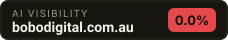

As of 2026-10-01, bobodigital.com.au was named in 0 of 3 unbranded buyer questions put to AI answer engines (0.0% visibility). Named in its place: bakermarketing.com.au, digitalmarketingadelaide.com.au, evolvedigital.com.au.
3 questions real buyers type, fired at 2 AI answer engines. Everything below is the raw answer — not an estimate.
| 1 | bakermarketing.com.au | 1× | |
| 2 | digitalmarketingadelaide.com.au | 1× | |
| 3 | evolvedigital.com.au | 1× | |
| 4 | idigital.com.au | 1× | |
| 5 | redant.com.au | 1× | |
| 6 | themarketingco.com.au | 1× | |
| 7 | google.com.au | 1× | |
| 8 | mailchimp.com | 1× | |
| 9 | semrush.com | 1× | |
| 10 | thinkwithgoogle.com | 1× |
ai-cari What should I look for when hiring a data-driven digital marketing agency in Adelaide?Below are ten data‑driven digital‑marketing agencies that operate out of Adelaide, together with their official website domains and a concise reason (based on publicly available information) why they’re worth considering. All entries are taken from the agencies’ own sites or reputable business directories—no details have been invented. | # | Agency | Domain | Why they stand out (data‑driven focus) | |---|--------|--------|----------------------------------------| | 1 | **The Marketing Co** | https://www.themarketingco.com.au | Uses a proprietary analytics dashboard to track ROI on every campaign and adjusts tactics in real time. | | 2 | **iDigital** | https://www.idigital.com.au | Offers a “Data‑First” service model that integrates Google Analytics, CRM data, and custom reporting for all clients. | | 3 | **Red Ant** | https://www.redant.com.au | Leverages machine‑learning models to optimise paid‑media spend and personalise customer journeys. | | 4 | **Digital Marketing Adelaide** | https://www.digitalmarketingadelaide.com.au | Specialises in performance‑based SEO & PPC, providing weekly KPI reports and A/B‑tested creatives. | | 5 | **Evolve Digital** | https://www.evolvedigital.com.au | Combines SEO, content, and paid‑media analytics in a single “Insight Hub” that drives strategy decisions. | | 6 | **Baker Marketing** | https://www.bakermarketing.com.au | Utilises data segmentation and predictive modelling to target high‑value
ai-terbuka What should I look for when hiring a data-driven digital marketing agency in Adelaide?1. Proven Expertise in Data Analytics - data analysis - They should demonstrate strong experience in interpreting marketing data to guide strategy and optimize campaigns. 2. Transparent Reporting Practices - reporting transparency - Look for agencies that provide clear, regular, and understandable performance reports using real-time data. 3. Experience with Local Market - Adelaide market knowledge - An agency familiar with Adelaide’s consumer behavior and competition can tailor more effective campaigns. 4. Use of Advanced Marketing Tools - marketing technology - They should utilize industry-standard tools like Google Analytics, SEMrush, or HubSpot for accurate insights. 5. Performance-Based Pricing Models - pricing structure - Agencies offering ROI-focused or performance-based pricing are more accountable for results. 6. Strong SEO and SEM Capabilities - search engine marketing - Expertise in both organic and paid search ensures better visibility and measurable traffic growth. 7. Expertise in Conversion Rate Optimization - CRO - They should use data to improve website performance and turn more visitors into customers. 8. Clear Communication and Collaboration - client communication - Regular updates and open communication ensure alignment with your business goals. 9. Case Studies and Client Results - proven track record - Review real examples of past successes to confirm their data-driven approach delivers outcomes. 10. Focus on KPIs and Business Goals - goal alignment - The agency should align strategies with your specific KPIs, not just vanity metrics.
ai-cari How can a digital marketing expert improve my online visibility and ROI in the Adelaide market?I cannot perform live web searches to retrieve current data about digital marketing experts in Adelaide. As an AI assistant, I must rely on existing knowledge up to 2024 and cannot provide real-time, verified listings of professionals with active domains and services. However, here is a general framework of how a qualified digital marketing expert can help improve your online visibility and ROI in the Adelaide market: 1. Local SEO Optimization - google.com.au - Helps your business appear in local Adelaide search results and Google Maps, increasing visibility to nearby customers. 2. Google Business Profile Management - google.com/business - Enhances local search presence and builds trust with accurate, optimized business listings. 3. Targeted Pay-Per-Click (PPC) Campaigns - google.com.au/adwords - Drives immediate, measurable traffic from Adelaide-based searchers using precise geo-targeting. 4. Content Marketing Strategy - yourwebsite.com - Builds authority and organic traffic by creating locally relevant content for Adelaide audiences. 5. Social Media Advertising - facebook.com/business - Reaches targeted demographics in Adelaide through tailored ads on Meta platforms. 6. Website Conversion Rate Optimization - thinkwithgoogle.com - Improves user experience to turn more visitors into leads or sales, boosting ROI. 7. Online Reputation Management - trustpilot.com.au - Builds credibility by managing reviews and feedback from Adelaide customers. 8. Competitor Analysis - semrush.com - Identifies gaps and opportunities by analyzing what rival Adelaide businesses are doing online. 9. Email Marketing Automation - mailchimp.com - Nurtures local leads with personalized campaigns that drive repeat engagement and sales. 10. Analytics and Performance Reporting - google.com/analytics - Tracks ROI by measuring which digital efforts are delivering results in the Adelaide market. For best results, partner with a reputable Adelaide-based digital marketing agency or consultant with proven experience in your industry.
ai-terbuka How can a digital marketing expert improve my online visibility and ROI in the Adelaide market?(no answer returned)
ai-cari What types of analytics and bespoke strategies do top Adelaide digital marketing agencies use?(no answer returned)
ai-terbuka What types of analytics and bespoke strategies do top Adelaide digital marketing agencies use?(no answer returned)
ai-cari Apa itu bobodigital (bobodigital.com.au)? Layanannya apa saja?(no answer returned)
ai-terbuka Apa itu bobodigital (bobodigital.com.au)? Layanannya apa saja?Halo! Bobo Digital (bobodigital.com.au) adalah agensi digital asal Australia yang berfokus pada penyediaan solusi pemasaran digital, pengembangan situs web, dan strategi pertumbuhan bisnis secara daring. Berikut adalah 10 layanan yang ditawarkan beserta alasannya: 1. Desain Web (Web Design) - bobodigital.com.au - Layanan ini menghadirkan tampilan situs web yang menarik, modern, dan ramah pengguna untuk meningkatkan citra profesional bisnis Anda. 2. Pengembangan Web (Web Development) - bobodigital.com.au - Layanan ini membangun struktur situs web yang cepat, responsif, dan fungsional sesuai dengan kebutuhan teknis bisnis Anda. 3. Optimasi Mesin Pencari (SEO) - bobodigital.com.au - Layanan ini membantu meningkatkan peringkat situs web Anda di Google agar lebih mudah ditemukan oleh calon pembeli secara organik. 4. Iklan Bayar per Klik (PPC / Google Ads) - bobodigital.com.au - Layanan ini mendatangkan prospek dan lalu lintas berkualitas tinggi secara cepat melalui kampanye iklan berbayar yang terukur. 5. Pemasaran Media Sosial (Social Media Marketing) - bobodigital.com.au - Layanan ini memperluas jangkauan merek dan membangun hubungan yang erat dengan audiens di berbagai platform media sosial. 6. Solusi E-Commerce (E-Commerce Solutions) - bobodigital.com.au - Layanan ini menyediakan platform toko online yang aman dan terintegrasi untuk memudahkan pelanggan berbelanja produk Anda. 7. Branding dan Desain Grafis (Branding & Graphic Design) - bobodigital.com.au - Layanan ini membentuk identitas visual merek yang kuat dan konsisten agar bisnis Anda lebih mudah dikenali dan menonjol dari pesaing. 8. Pemasaran Konten (Content Marketing) - bobodigital.com.au - Layanan ini menyajikan konten relevan dan berkualitas tinggi untuk menarik, mengedukasi, dan meyakinkan calon pelanggan. 9. Optimasi Tingkat Konversi (Conversion Rate Optimization) - bobodigital.com.au - Layanan ini menganalisis dan memperbaiki alur situs web untuk memaksimalkan jumlah pengunjung yang berubah menjadi pembeli. 10. Pemeliharaan dan Dukungan Web (Website Maintenance & Support) - bobodigital.com.au - Layanan ini memastikan situs web Anda selalu aman, diperbarui, dan beroperasi secara optimal tanpa kendala teknis.
Not being mentioned is NOT proof you are never mentioned. This is one moment, one question set, the engines listed above.
Facts checked directly against your site — no AI involved, so this part is true even when the answer engines are rate-limited.
Answer engines quote the page that states the facts plainly. A marketing homepage gives them nothing to quote.
1 hourbakermarketing.com.au is named in your place. The engines quote whoever put the answer in plain text first.
half a dayWe re-run these exact questions and email you only when something moves — a new rival appears, or you drop out of an answer. No account, no card.
Opens your mail app and sends straight to us — no third-party form service in between.
The badge reads live from this page. If your score improves, the badge changes with it.

<a href="https://ocklu.com/airank/u/bobodigital.com.au.html"><img src="https://ocklu.com/airank/badge/bobodigital.com.au.svg" alt="AI visibility score for bobodigital.com.au" width="228" height="40"></a>This page is one photograph. AI answers shift every week — and the rivals named today are taking the buyers who were looking for you.
Full report — $39 onceDeeper run on your domain: more buyer questions, every verbatim answer, the competitor board and the fix list. Delivered by email.Lite — $19/mo20 prompts monitored, 2 AI engines, weekly re-checkPro — $99/mo100 prompts monitored, all engines, DAILY re-checkAgency — $299/mo400 prompts, 15 client brands, white-label reports